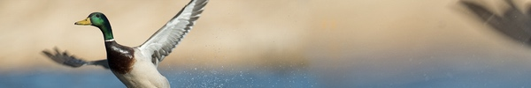

üëπ ARTSTUFF.WTF

FRI 6/1
A Long Drive For Someone
the wulf. at Coaxial
8pm - 11pm
$?
A sound and video installation about memory, music, and masculinity using pre-made and found material, including samples and field recordings. A Long Drive For Someone functions as a radio piece, audio collage, and mixtape all together. Using samples, field recordings, and interviews, A Long Drive For Someone is seventeen aural portraits, filtered through our individual and collective memories, presented as a track-by-track answer to the Modest Mouse record This Is a Long Drive For Someone With Nothing To Think About.
LINK

SAT 6/2
Pedal Building Group Session
Coaxial
10am - 4pm
Free to attend / $40 to build a kit, optional
If you've ever been interested in building instrument effect pedals, then this event is right up your alley. It is designed to help you get your feet wet in audio electronics and allow you to build your very own audio effects. We'll discuss active and passive components, power, filters, & more! We'll also be cutting wires, soldering, and using a multimeter to test and troubleshoot. At the end of the day, we'll have built our own prototyping board to make our own effects and to use together for future meet ups. We'll be sure to do a fun, recognizable circuit together so we can all get familiar with how it works. This meet up is free to attend! If you want to build a proto board with us, it will be $40 to cover the cost of parts. Please let me know ahead of time if you want the prototyping board since there will only be 20 kits available. This event is public, so feel free to invite anyone!
LINK
Southland Ensemble : Byzantine Rites
Automata
8pm - 10:30pm
$15/$18
Featuring new work by Laura Steenberge. Byzantine Rites is a new collection of pieces in which chant-inspired musical textures accompany actions performed with household objects. The title speaks in part to the borrowing of fragments of medieval Byzantine chants to form the musical materials, and in part to the use of Byzantine to refer to unnecessarily complicated procedures. This concert is presented in conjunction with the Dog Star 14th annual festival of experimental music. Formed in 2013, Southland Ensemble is a contemporary chamber ensemble dedicated to the interpretation and performance of experimental music. The ensemble consists of eight core members and often collaborates with guests as the music requires. Each member of the ensemble is proficient on a least one or more traditional Western instruments, as well as spoken word and found objects - stones, radios, sheet metal, and household items to name a few.
LINK
Made in LA 2018: Opening Exhibition
Hammer Museum
8pm - 11pm
FREE
Made in L.A. is back! Join us on Saturday, June 2, to celebrate the fourth edition of the Hammer’s biennial exhibition showcasing artists from across Los Angeles. The exhibition’s 32 artists range in age from 29 to 97 and have contributed works that are deeply engaged with vital aspects of our contemporary culture. While there is no overarching theme, many of the artists share common interests. Several grapple with issues of representation, marginalization, and pressures placed on the body. Some artists offer interpretations of cultural practices, proposing how ancient forms of knowledge may be reimagined in the present, or reflect on the current political climate. Others consider the landscape, climate change and its repercussions, and the relationship between the land, capitalist expansion, and violence. Through drawings, paintings, sculpture, textiles, performance, video, photography, and installations—many newly commissioned expressly for Made in L.A. 2018—these artists exemplify the diverse and creative landscape of Los Angeles today.
LINK
SUN 6/3
Dog Star 14 : Tunnel Music
Mueller Tunnel, San Gabriel Mountains
3pm - 4:30pm
FREE
Heather Lockie's site-specific new work for 7 vocalists - 'Song to be Performed in a Tunnel in Your Town'. Mueller Tunnel provides a stark shady contrast to this sunny, quiet mountainous environment. It stands out as an anomalous presence in these mountains, and people walking through the tunnel on their way to the Mt. Lowe trail frequently holler, or hum, or sing. This performance is a distillation of those natural tendencies. Come early or stay after the performance, to hike this easy/moderate trail up to beautiful Mt. Lowe overlook, from where you can see from San Pedro harbor and the ocean (if the day is clear), to San Bernardino horizon, to the surrounding Angeles Crest Mountains.
LINK
CINEMA ORGANICA AT COTTONWOOD URBAN FARM
Echo Park Film Center at Cottonwood Farm
4pm - 9pm
Free
Join for a fun filled family friendly workshop as we learn to shoot Super 8 film then process the film using organic material found and grown in the garden. The event is FREE and OPEN to EVERYONE!!! Cinema Organica acknowledges the importance of green space and growing healthy food in Los Angeles while inviting traditionally media-marginalized populations to create films about their gardens using innovative eco-friendly processes incorporating plant material from the gardens themselves. The project involves a series of weekend eco-friendly filmmaking workshops at community gardens throughout the County of LA. Using old school Super 8 “home movie” cameras, participants of all ages will work together to create a collaborative film about each garden and then process the analog footage on site using fruit, flowers and leaves from the various plots. In substituting indigenous organic material for toxic chemical developing agents, participants create vibrant works of art that celebrate and respect the community, the plants and the environment.
LINK
Dog Star 14 : A House is Made With Walls & Beams
Human Resources
8pm - 11pm
$5 - 10
Premieres by Stephanie Smith, Cassia Streb, Sepand Shahab, Eric Heep and John Eagle for the 8 channel modular sound system 'Sound House', a collaborative project with Janie Geiser, John Eagle & Cassia Streb.
LINK
ABOUT
ARTSTUFF.WTF is a minimal website listing page for selected mostly DIY art (and etc) events going on around Los Angeles. It is a personal list of 5 - 10 events sent out to friends weekly, and made available online here for bookmarking and quick reference. There is an archive of past listings. Sign up to receive weekly emails. Made by Lee Tusman.